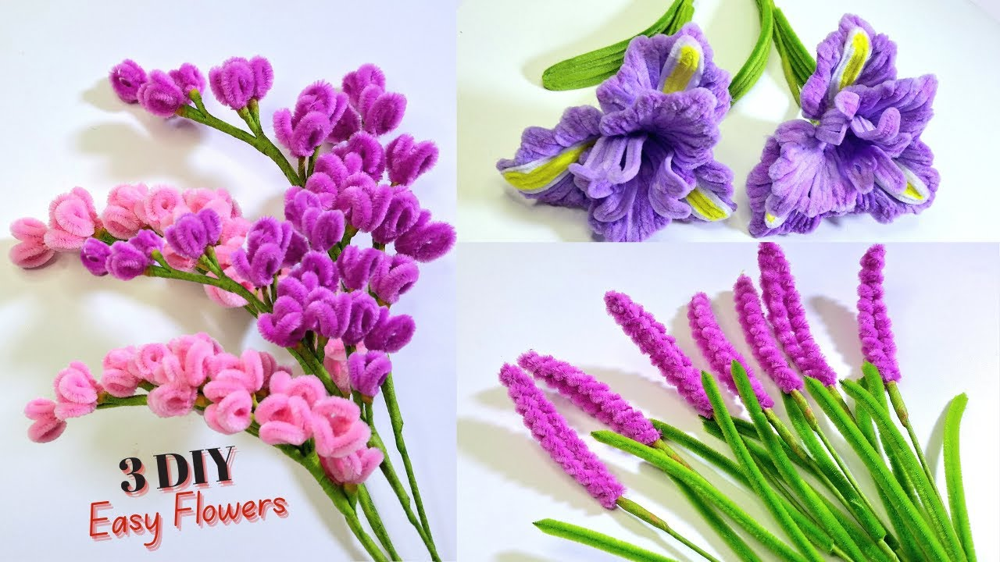
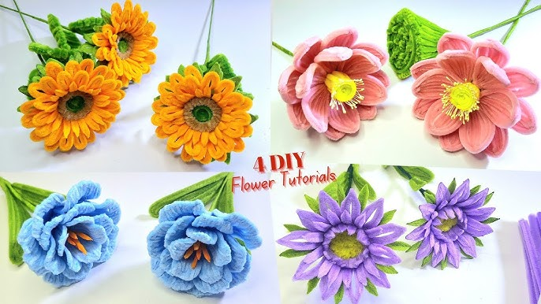

Creating flowers out of fuzzy wire is a hobby that I picked up recently and I have been enjoying it so far. I like creating all kinds of flowers and use them as room decor or gifts. I usually follow a video on Youtube.
I really enjoy making fuzzy wire flowers because it helps me relax and allows me express my creativity.
Materials I use
- Fuzzy Wire
- Hot glue gun
- Stamen
- Scissors
- Beads
- Floral tape
- Floral stick
Steps I take to create a flower
- Choose a tutorial to follow
- Pick colors according to the flower
- Twist the fuzzy wire into petals
- Use hot glue gun to stick the petals together
- Add stem
- Shape flower

